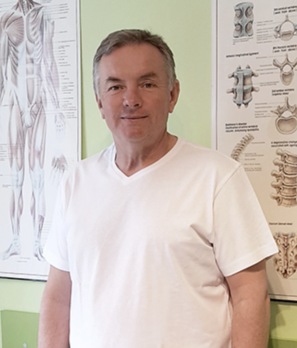

- replantacja kończyn, palców, skóry, uszów itp.
- bóle stawów
- postępowanie po urazach
- trudno gojące się rany
- zapalenie korzonków nerwowych
- złamania
O mnie

Marek Kosiński
Jestem hirudoterapeutą, masażystą i absolwentem Akademii Wychowania Fizycznego w Poznaniu którą ukończyłem z tytułem magistra.
Od zawsze interesowały mnie naturalne metody leczenia, w 2010 roku postanowiłem pogłębić swoją wiedzę w zakresie hirudoterapii i larwoterapii kończąc wiele kursów związanych z tym zawodem.
Od 2010 roku praktykuję zdobytą wiedzę pomagając osobom pozbyć się bólu, wrócić do zdrowia oraz zagoić obszerne rany.
Do każdego pacjenta podchodzę indywidualnie, a możliwość pomocy sprawia mi ogromną satysfakcję.
Zapraszam Państwa do swojego gabinetu na indywidualne zabiegi.
Usługi

Leczenie pijawkami
Larwoterapia
- owrzodzenia i martwice różnego pochodzenia mi. stopa cukrzycowa, odleżyny itp.
- rany infekcyjne
- rany pooperacyjne, nowotworowe
- rany trudno gojące przy współistniejących przeciwskazaniach do antybiotykoretapii
- rany które nie mają możliwości chirurgicznego opracowania
wskazania
Masaż
- klasyczny
- relaksujący
- tkanek głębokich
- masaż bańkami
- antycelulitowy
zapraszamy na masaż
Oferujemy też szeroką gamę specjalistycznych masaży niezawodnych przy bólach kręgosłupa, po urazach, złamaniach czy udarach mózgu.
Terapia bańkami
- częste przeziębienia
- stany pourazowe
- stany zwyrodnieniowe
- ujędrnianiu skóry twarzy
- celulit
- masaż
wskazania
Gimnastyka korekcyjna
- skolioza
- lordoza
- kifoza
- płaskostopie, stopa nadmiernie wydrążona
- koślawość kolan i stóp
- szpotawość kolan i stóp
skrzywienie kręgosłupa
wady nóg i stóp
Rehabilitacja
- wylewach
- udarach
- złamaniach
- urazach
pomożemy wrócić do zdrowia po
Dyplomy


Kontakt
dane kontaktowe
Telefon
+48 600 130 206
adres
Tuwima 8
09-400 Płock
HIRUDOTERAPIA